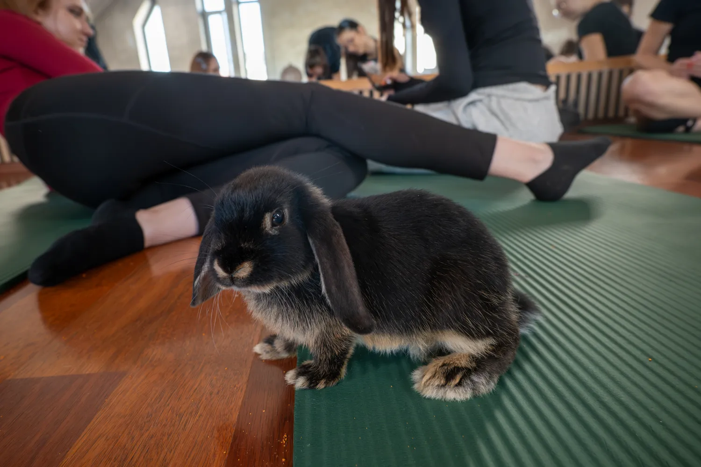
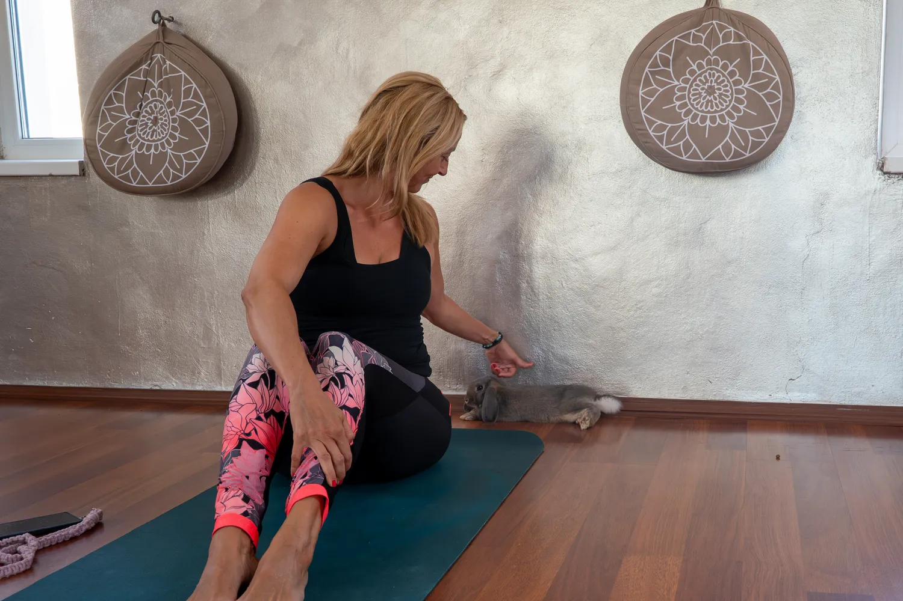
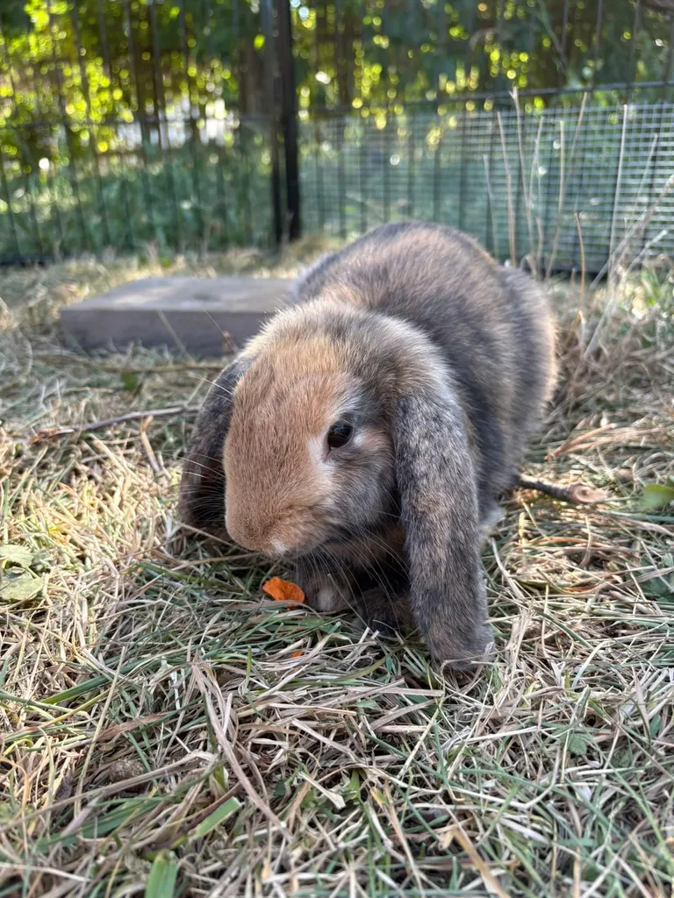
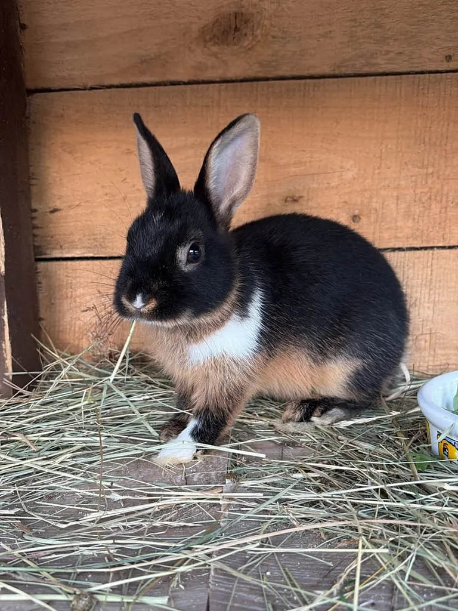

Klid místo výkonu
Jde nám o chvíli pro sebe, ne o dokonalý tvar. Nikdo se nedívá, jak komu to jde.

Cvičíme pomalu, v malých skupinách a s deseti domácími králíčky, kteří se mezi podložkami volně pohybují. Ve Fit&Fun Studiu v Ostravě-Mariánských Horách.

Jóga s králíčky vznikla pro lidi, kteří mají rádi zvířata a chtějí na chvíli vypnout. Králíka nejde popohnat, a tak zpomalí i všichni kolem něj.
Nejsme fitness a nikdo tu nehoní dokonalé pozice. Lektorka ukáže, co a jak, nabídne jednodušší variantu a zbytek necháme na vás a na králících.
Studio provozuje Barbora Kovačíková. Když se chcete na cokoliv zeptat, napište jí na info@jogaskralicky.cz.
Jde nám o chvíli pro sebe, ne o dokonalý tvar. Nikdo se nedívá, jak komu to jde.
Na lekci je nejvýš 10 lidí. Na každého tak zbyde místo, pozornost lektorky i králík.
I pro úplné začátečníky. Dospělí mají vlastní lekci a děti od 10 let chodí s rodičem na dětskou.



Každý má jméno, povahu i svůj oblíbený kout sálu. Někteří jsou odvážní a přijdou za vámi hned, jiní si potřebují chvíli zvykat.
Nikoho k ničemu nenutíme. Králíci si sami vyberou, ke komu půjdou, a právě proto je to pokaždé jiné.
Prohlédnout fotky →Přijďte prosím o deset minut dřív, ať se stihnete v klidu zout a králíci si vás stihnou očichat.
Fit&Fun Studio Ostrava
Tovární 486/7, 709 00 Ostrava-Mariánské Hory
Zastávka Daliborova, linky 3, 4, 8, 18 a 19. Ke vchodu je to přibližně 100 metrů, asi dvě minuty pěšky ulicemi Daliborova a Tovární.
Máte bezplatné parkování přímo u studia. Do navigace zadejte Tovární 486/7, Ostrava-Mariánské Hory.
Pravidelně v sobotu 10:30, ale ne nutně každou sobotu. Před cestou si termín vždy ověřte v rezervaci.
Vyberte si termín, darujte lekci někomu blízkému, nebo si domluvte lekci jen pro svou partu.